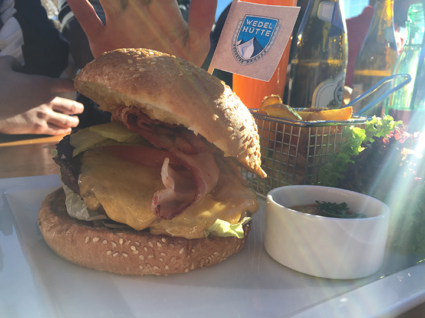
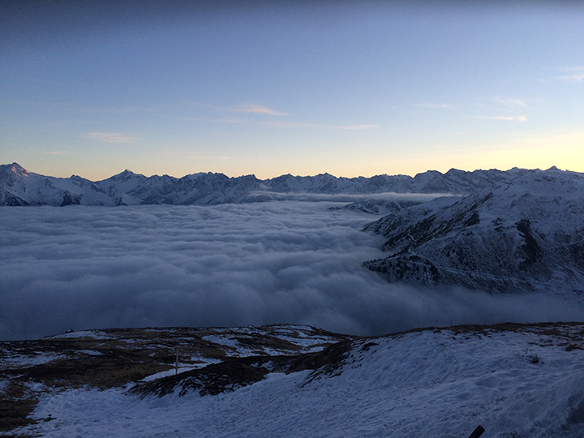

Food
Almost all huts offer a great variety of delicious food. Dishes vary from classic local specialities such as Kaiserschmarrn or Currywurst to international classics such as burgers and pasta.
Events
Watch out for special events on the huts in your ski resort. Almost every day DJ's are playing all ski day long.

Views
Some huts are located on the very top of high mountains. From the sky terrace, you can enjoy a fantastic look over valleys and mountains. Don't forget to take a snapchat for your story.